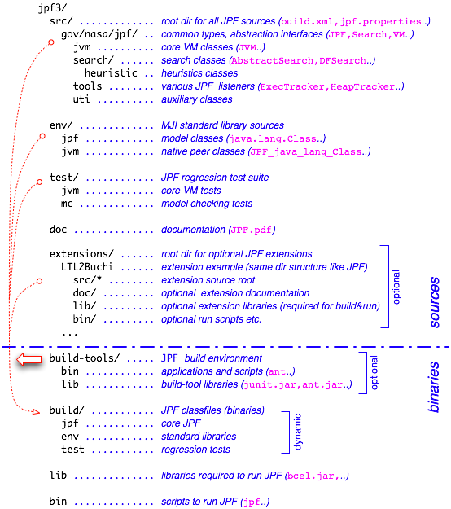

The JPF directory tree is divided into two categories: sources and binaries. Sources do not only contain the core JPF classes, but also standard library abstractions used by JPF, this HTML documentation, and a regression test suite. Binaries include the JPF class files, and (optionally) required 3rd party libraries and build-tools.

Figure 1: JPF directory structure
To enable builds of JPF outside an integrated development environment, the JPF distribution contains an optional directory tree that contains everything that is required to compile JPF sources from a command line. Using these tools, a build directory is created that holds the class files for the three major source directories.
The lib directory contents are required to run JPF, and need to be in the CLASSPATH if JPF is started directly, i.e. without the provided scripts.
To ease JPF execution, the bin directory contains scripts to automatically set the CLASSPATH. The script bin/jpf can be used to start JPF from the command line like a normal Java VM (i.e. is a java drop-in replacement).